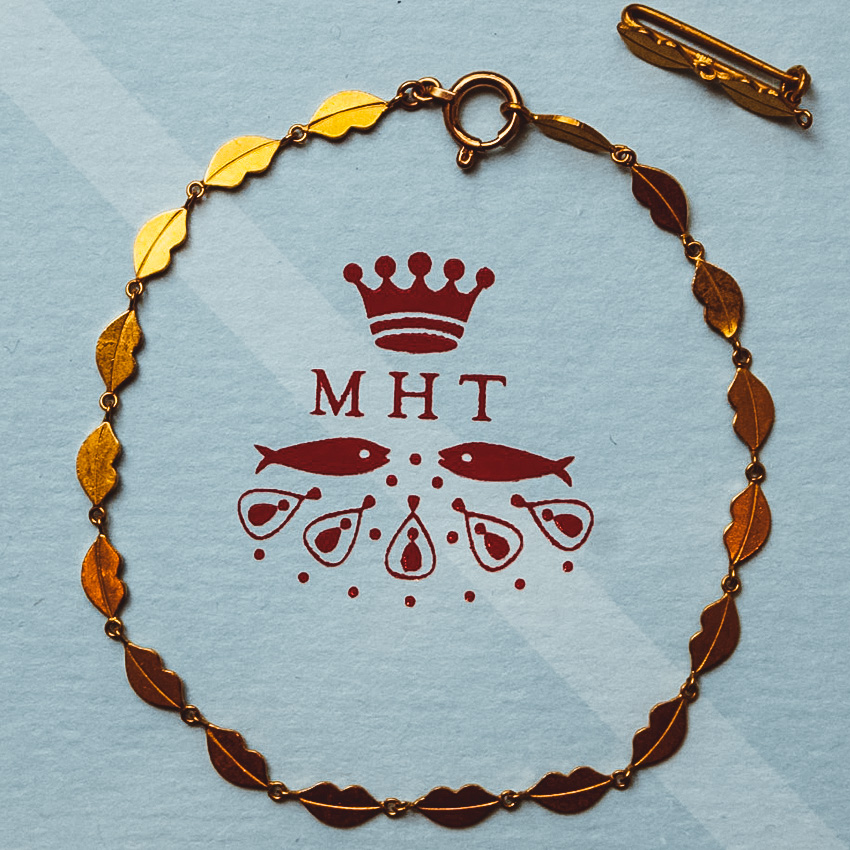
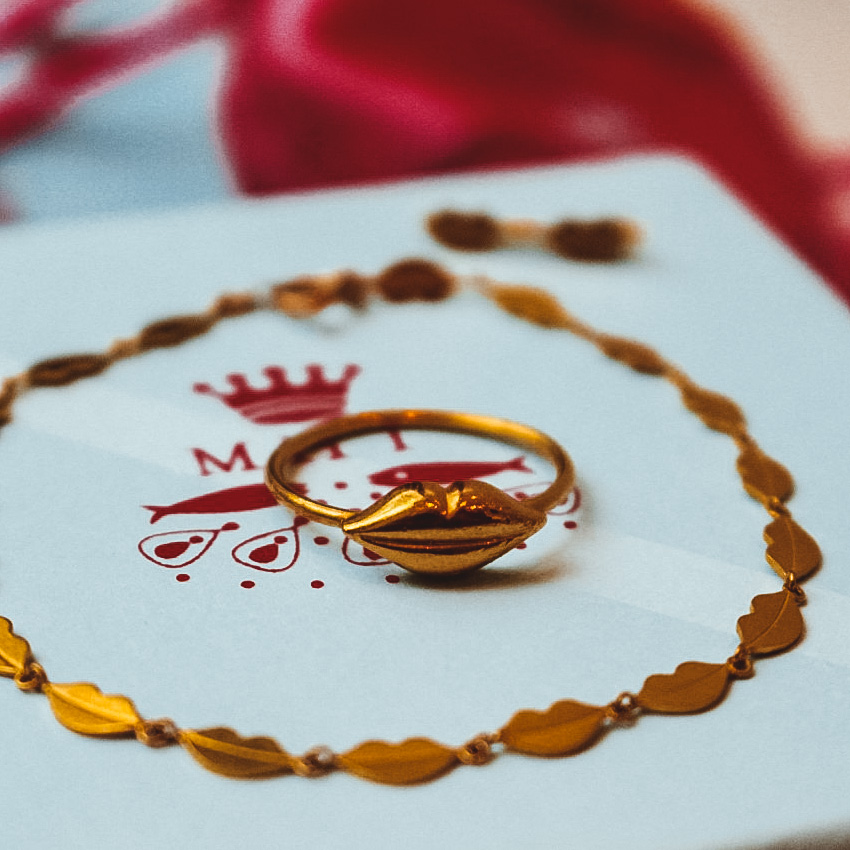

Time machine
十数年前 なくなったと思っていた入手不可能なレアCD
十数年来 もう使ってないラジカセの中で発見した
自由設定で過去の失敗にもし戻れるとしたら、どうする?
十数万円 条件は一つだけもう今には戻れない
やり直したい事ってこんないっぱいあったんだ
あの時好きだと言えなかったことかな...?
この世界のどっかでタイムマシーンみたいなユメの装置を開発しているとしてそれはすぐやめるべきだと思う
2023年 もうちょっとすると時間旅行にいけるかも!?
でもぼくらやり直しがきく将来なんて望むかな?
あの夜死んでしまったあいつに会いたいけど
もう一度死ぬとこなんて見たくもない
ひとつもウソつかず生きてみようか...
あるいはあの日の許せない言葉とあいつら消そうか...
もし世界のどっかでタイムマシーンみたいなユメの装置が 完成したとしてはやいとこぶち壊すべきだろう